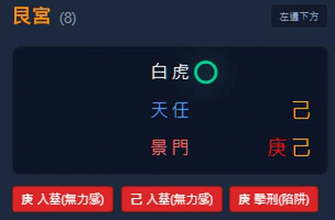

這門課適合誰？
零基礎想學奇門遁甲的人
自學很久卻不會完整解盤的人
會看八門九星八神，但無法連成現實故事的人
想用奇門遁甲判斷感情、工作、財運、人生方向的人
想學一套有步驟、有邏輯的解盤方法的人
一對一線上學習，
不只是看課，而是帶你練習解盤
這門奇門遁甲線上課程不是讓你單純看影片、背斷語，而是透過一對一教學，帶你從排盤、看九宮結構、找用神、判斷四害，到最後整理成現實可用的解盤建議。透過實際問題練習，你會更清楚知道每個符號在盤中代表什麼，也會逐步建立自己的判斷能力。
為什麼很多人學奇門會卡關？
很多人學奇門遁甲卡住，不是因為不努力，而是因為一開始看到的是大量符號：八神、九星、八門、天干、地支，以及門迫、入墓、擊刑、空亡等特殊狀態。初學者常常知道名詞，卻不知道這些符號放在同一個宮位時，到底要怎麼轉成現實判斷。
白星奇自研排盤工具的特色，是把盤中的神、星、門、干支與特殊狀態視覺化標示，讓學生更快看懂盤面結構。這不是要讓工具取代老師解盤，而是先幫初學者降低入門門檻，知道自己正在看的不是一堆符號，而是一個有層次的局勢提示。
免費奇門排盤工具可以幫你看懂符號，課程則會帶你進一步理解九宮結構、用神互動、四害影響與整體局勢判斷。

自研排盤工具示意：將奇門符號與四害狀態視覺化提示，協助初學者快速進入盤面。
課程會學到什麼？
獨家解盤邏輯
白星奇八步解盤法
第一步
先看整體大局
第二步
檢查四害狀態
第三步
觀察伏吟、反吟或特殊格局
第四步
找出用神與核心宮位
第五步
判斷阻力、資源與關係互動
第六步
分析趨勢與時間感
第七步
找出突破點與避險方向
第八步
整理成可執行的現實建議
一對一課程 vs 錄影課 vs 團體課
| 比較項目 | 一對一線上課程 | 錄影課 | 團體課 |
|---|---|---|---|
| 互動程度 | 極高 | 低 | |
| 能否問自己問題 | 可隨時發問 | 依老師時間而定 | |
| 改正解盤盲點 | 老師親自指正 | 難以顧及所有人 | |
| 適合對象 | 想確實學會解盤者 | 只要學基礎理論者 | 預算有限想聽聽看者 |
| 學習彈性 | 依個人進度調整 | 綁定進度 | 固定進度 |
課程特色：自研排盤工具＋AI 輔助
白星奇的教學可搭配自研奇門排盤工具與 AI 單宮解析提示，幫助學生先理解局部符號。
但請注意：AI 只能輔助初學者看懂單宮，真正解盤仍需要老師帶著學生理解九宮結構、用神互動、格局趨勢與現實問題。工具是輔助，人腦的邏輯判斷才是核心。